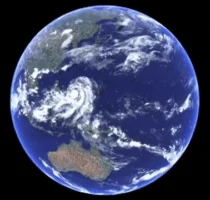

De Aarde

Onze thuisplaneet is de derde planeet vanaf de zon, en de enige plaats die we tot nu toe kennen die wordt bewoond door levende wezens.
Hoewel de aarde slechts de vijfde grootste planeet in het zonnestelsel is, is het de enige wereld in ons zonnestelsel met vloeibaar water aan het oppervlak. Net iets groter dan het nabijgelegen Venus. Is de aarde de grootste van de vier planeten die het dichtst bij de zon staan, die allemaal zijn gemaakt van steen en metaal gemaakt zijn.
De naam Aarde is minstens 1000 jaar oud. Alle planeten, behalve de aarde, zijn vernoemd naar Griekse en Romeinse goden en godinnen.
De naam Aarde is echter een Germaans woord, dat "de grond" betekent.
Onze atmosfeer beschermt ons tegen inkomende meteoren, waarvan de meeste uiteenvallen in onze atmosfeer voordat ze het oppervlak kunnen raken
Als de zon zo groot zou zijn als een typische voordeur, zou de aarde zo groot zijn als een nikkel.